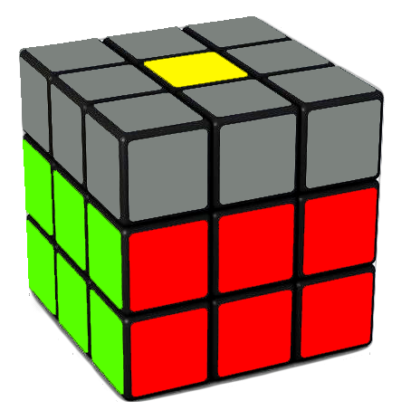

Now continue to hold the white side on the bottom. I'll show you how the cube will look after you do the step.
The cube would look something like this, you would have all four middle layer edges solved as well as the white side still solved. This step is really easy as you only just put four pieces in the correct place, those are the four middle layer edges. The first thing you need to do is just pick any edge on the top layer that does not have yellow on it. Now what you want to do is you want to match this front colour with its centre. So I'll just do U-turns until it matches, this is sort of like what we did when we made the white cross. For example, if I chose the blue and orange edge and the blue colour was facing the front, then I would do U-layer turns until the edge is matching with the blue centre, now you need to look at the top colour of the edge. In the example, it is orange. Now since I chose the blue and orange piece, it has to go between the blue and orange centres. Now since I am holding the yellow side up and blue side front, orange is on the left side. So I am going to do the left side algorithm, the algorithm goes U’ L’ U L U F U’ F’ and now the edge should be in the right place. Now, choose another edge. For example, I could choose the blue and red edge piece next. If, for example, the blue colour is in front, I would do U-layer turns until it matches with the blue centrepiece. Since I am still holding yellow on top and blue in the front, red is on the right side. So, I need to do the right side algorithm, which is U R U’ R’ U’ F’ U F. Repeat this process for all edges that don't have yellow on them.